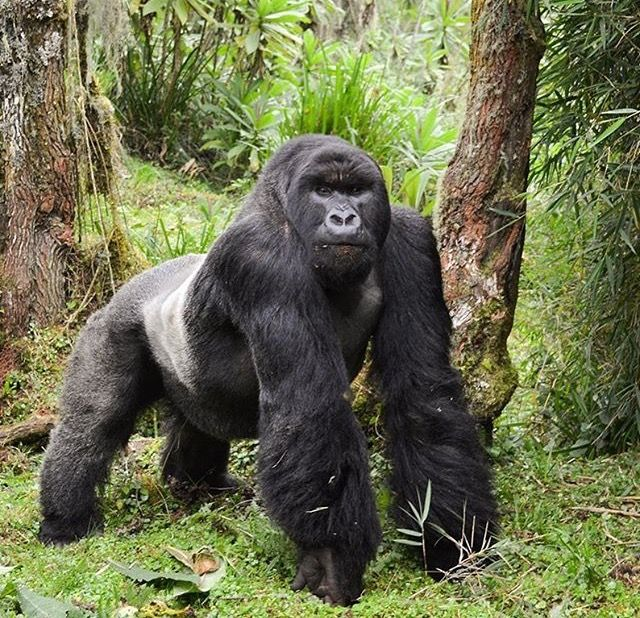

5 Hewan Langka !
1. Badak Jawa

Dulunya, spesies ini bisa ditemukan di hampir seluruh Asia Tenggara. Kini penurunan jumlah yang drastis akibat perburuan dan hilangnya habitat, menjadikannya sebagai badak jawa sebagai salah satu spesies badak paling langka.
Populasi badak jawa hanya sekitar 75 individu dan hanya dapat ditemukan di Pulau Jawa, Indonesia. Spesies ini termasuk rentan punah karena bencana alam, penyakit, perburuan liar untuk mengambil culanya, dan potensi perkawinan sedarah.
Tempat konservasi badak jawa berada di Taman Nasional Ujung Kulon, dan menjadi tempat perlindungan terakhir badak jawa. Namun wilayah tersebut juga terkena dampak serangan pohon palem Arenga, sehingga badak hanya mempunyai sedikit makanan dan habitat untuk berkeliaran.
2. Macan Tutul Amur

Macan tutul amur merupakan kelompok kucing besar dan paling langka di dunia. Saat ini populasi nya sekitar 100 ekor di alam liar. Macan tutul amur hanya dapat ditemukan di wilayah yang relatif kecil di jauh timur Rusia dan timur laut China.
Sejak tahun 1996, diketahui subspesies macan tutul amur ini terancam punah. Mereka terancam karena fragmentasi habitat, kelangkaan mangsa, dan infrastruktur transportasi seperti jalan raya. Namun, masih ada harapan bagi kucing besar ini. Sekitar 75% wilayah jelajahnya terletak di kawasan lindung Rusia dan China.
3. Harimau Sumatra

Jenis harimau yang disebut juga dengan sebutan harimau sunda ini merupakan spesies langka. Harimau sumatera merupakan subspesies harimau terkecil di dunia dengan berat sekitar 140 kg.
Diperkirakan populasi mereka hanya sekitar 600 ekor di alam liar dan hanya dapat ditemukan di Pulau Sumatera, Indonesia. Namun, seiring dengan meluasnya pemukiman manusia habitat harimau Sumatera jadi semakin kecil. Selain itu, perburuan harimau dan perdagangan ilegal bagian tubuhnya menimbulkan kekhawatiran serius pada kelangsungan hidup mereka.
4. Gorila Gunung

Hewan ini merupakan sub-spesies dari gorila timur, yang hidup di hutan dataran tinggi pegunungan vulkanik Republik Demokratik Kongo dan Taman Nasional Bwindi Impenetrable di Uganda.
Saat ini, gorila gunung terdaftar sebagai spesies yang terancam punah dengan jumlah populasi sekitar 1.000 individu di alam liar. Kepunahan ini dikarenakan lanskap Virunga yang tidak stabil secara sosial politik. Hal ini menimbulkan ancaman besar bagi gorila gunung karena manusia pindah ke wilayah yang lebih dekat dengan kera besar ini untuk mendapatkan makanan dan tempat berlindung.
5. Orang Utan Tapanuli

Orang utan tapanuli hanya bisa ditemukan di area alam liar yang terisolasi di hutan tropis ekosistem Batang Toru, Sumatera Utara, Indonesia. Spesies ini berada dalam status kritis karena jumlahnya hanya sekitar 800 ekor di alam liar. Angka tersebut mengancam mereka sebagai spesies kera besar paling terancam punah di dunia.
Ancaman tersebut muncul karena hilangnya habitat hutan hujan tropis yang digantikan pertanian, pertambangan, serta pembangunan pembangkit listrik tenaga air dan panas bumi. Diketahui antara tahun 1985 dan 2007, lebih dari 40% hutan tempat ditemukannya orang utan tapanuli telah hilang.